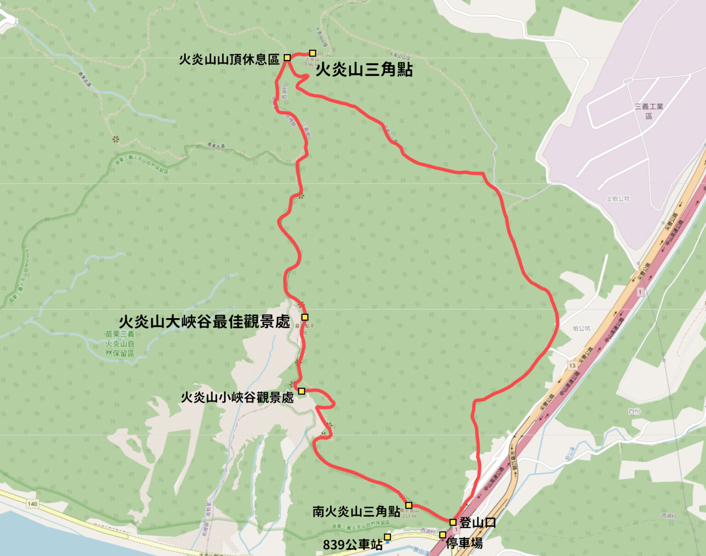

火炎山步道資訊
登山路口：登山步道約6.4公里，O型環狀進出
步道類型：郊山步道
步行時間：從火炎山登山口，到達火炎山三角點，來回大約三小時(180分鐘)
海拔高度：223～602公尺
步道長度：約 6.4 公里，O型環狀進出
步道難度：★★★★
火炎山海拔高度約602公尺，也是台灣35號小百岳，沿途可眺望大安溪谷苑裡、通宵、大甲一帶，還可近看壯闊的紅色山壁、感受馬尾松原生林，景緻特殊有別於台灣其他山林步道，步道難度不高，且不會太長，是條適合新手或是全家大小一同出遊的郊山健行路線。（提醒：途中因有許多石階梯、碎石地，如果攜帶登山杖的話會省不少體力喔！）
前往火炎山的行前準備
行前準備
- 充足的糧食和水
- 登山鞋或鞋底較厚且不怕髒的鞋
- 帽子（部分路段無遮蔽物易曝曬）
- 登山杖（可依個人習慣帶或不帶皆可）
- 雨衣（基本上前一兩天有下雨就建議不要去了）
天氣資訊
火炎山平均年溫度約23.7 ℃，最高平均溫為七月的34.5 ℃ ，最低平均溫為一月的16.15 ℃。相對濕度約為86 ﹪，平均降水量約為1800毫米，冬季受東北季風影響而多雨，梅雨期雨量頗多，7~8月雨量最多。
行前記得確認當地天氣狀況，火炎山的地形屬於礫岩，下雨過後常常會有土石崩落的狀況發生，建議避開雨天前後登山。
火炎山步道地圖
將小峽谷、大峽谷、火炎山三角點重要的景點一次走完，全程約6.4Km，約需要3～4小時。